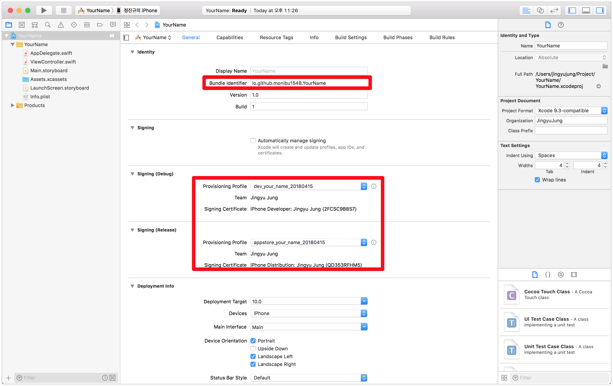

iOS Application 개발 시작하기 - 2 (프로비저닝 생성, XCode 프로젝트 설정)
-읽음
지난 포스팅 iOS Application 개발 시작하기 - 1 (개발자 등록, 인증서 등록) 에서는 애플 개발자 계정을 만들고 인증서를 등록했다.
이제 앱을 디바이스에서 실행시키기 위해 Provisioning Profile 을 생성하고, Xcode 프로젝트를 생성하는 과정을 다룬다.
App ID 등록
앱을 생성하기 위해서 먼저 Apple Developer에서 어떤 앱을 만들건지 App ID를 생성해야 한다.
- App Name : 앱 이름 ex) YourName
- Bundle Id : 앱의 번들 아이디 ex) io.github.monibu1548.YourName
아래 체크박스는 어떤 추가 기능이 필요한지 선택할 수 있다. 일단 패스하고 필요한 기능이 있다면 나중에 추가가 가능하다.
Provisioning Profile 생성
Provisioning Profile 이란, 앱이 디바이스에서 실행 될 수 있는지 정보를 갖고 있는 파일이며 .mobileprovision 확장자를 갖는다.
Provisiong Profile은 다음과 같은 정보를 갖고 있다. (Development)
- app bundle ID
- device UUID 정보
- certificate 정보
참고. 앱이 디바이스에 정상적으로 설치되기 위해 거치는 검증 과정
- Provisioning Profile에서 인증서 정보를 추출, 앱을 실행하려는 디바이스에서 인증서가 유효한지 확인
- Provisioning Profile에서 device UUID 정보를 추출, 앱을 실행하려는 디바이스의 UUID와 일치한지 확인
- CodeResources 디렉토리에서각 파일의 해시값을 실제의 파일들과 확인하여 빌드 후 수정이 되지 않았음을 확인
Provisioning Profile은 인증서와 마찬가지로 애플 개발자센터에서 생성한다.

Certificates, Identifiers & Profiles 메뉴에서 아래 버튼 클릭한다.
인증서 생성때와 마찬가지로 Development와 Production으로 구분되며 같은 구분의 인증서와 연결된다.
다음페이지에서는 App ID 에서 생성한 ID를 선택한다.
전 포스트에서 만들었던 인증서를 선택한다.
앱을 테스트 할 디바이스를 선택한다.
- 디바이스 등록은 개발자 센터 좌측
Devices에서 어렵지 않게 가능하다!
짜잔. Provisioning Profile이 생성되었다.
다운로드 받고, 더블클릭해서 실행하자. 그러면 XCode디렉토리에 자동 등록된다.
XCode 프로젝트 생성
XCode 실행 -> 메뉴 File -> New -> Project
Single View App 선택
App ID를 만들때 입력했던 Bundle ID 입력, App Name 입력해서 프로젝트 생성 후
프로젝트 파일을 열어보면 다음과 같다.
이제 Signing 영역에서 Debug(Development), Release(AppStore) 프로비저닝을 선택하여 마무리한다.

이제부터 코딩 시작!